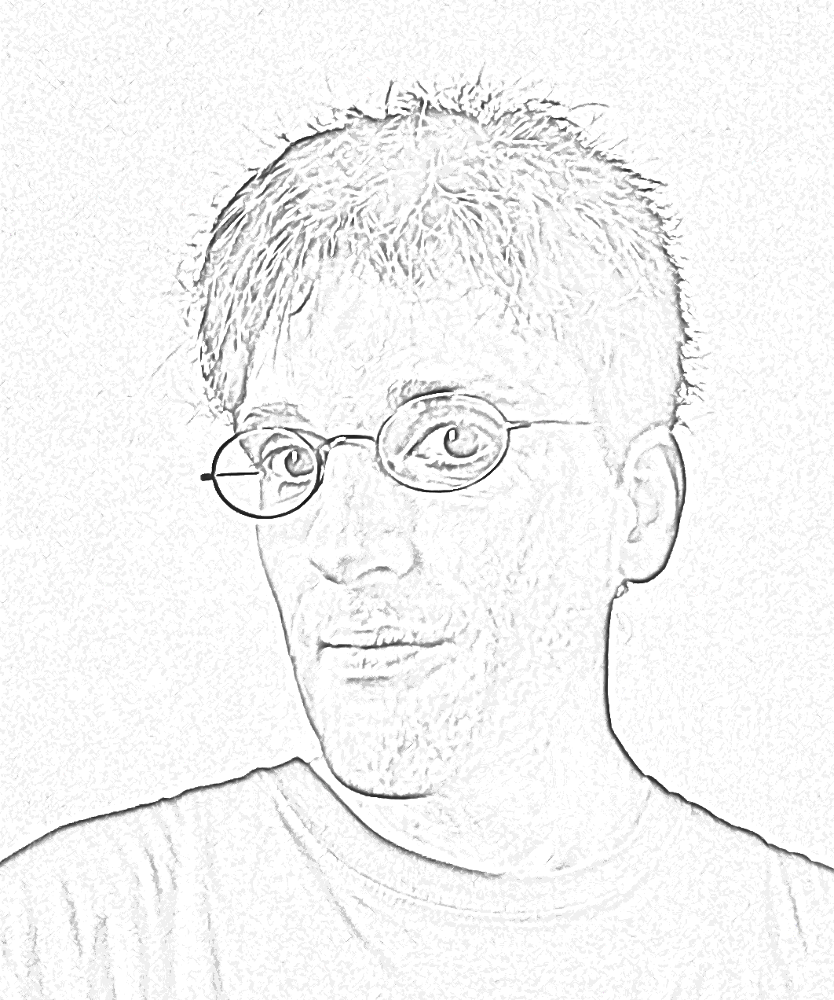

|
Michael Schindler Laboratoire Gulliver (CNRS UMR 7083). ESPCI, 10 rue Vauquelin. Paris (5th arrondissement). France. Office: A1-07 in the new central building, floor R+1. E-Mail: (first name).(family name) (AT) espci.fr Please use my public key for mail encryption. HAL-id: m-schindler (11606284) ORCID-id: 0000-0001-7799-1269 ResearchGate |
 |